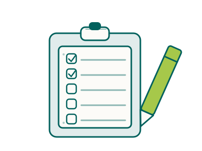

Ethicare Move — your move, all in one place
Ethicare Move · free, no account
Your move. All in one place.
A relocation planner for healthcare professionals moving to New Zealand or Australia.

Registration, the job, the visa, the money, the move and your first month — put in the right order for your profession, destination and stage of the journey.
Whether you find your job through Ethicare, apply directly or use another recruiter, your plan is yours.
Where are you in this?
One tap and we name the one thing worth doing next — you are never asked it twice. Free, and open well beyond the professions we recruit into. We say plainly which is which.
How it works
Your plan is saved in this browser on this device. Nothing is sent to us and there is no password — so use a device that is yours, and don’t put anything confidential in it.
What it answers
Four questions your plan helps you answer.
Can I actually work there?
Your regulator, the route most likely to apply to you, and what it asks for. Nineteen New Zealand councils; fifteen Australian boards through Ahpra.
Check your pathway → 02Should we go — and where?
Two countries, thirty-two destinations, and an honest account of the trade-offs rather than a brochure. Written for the whole household, not just the clinician.
Compare the two → 03Can we afford it?
Registration, visas, flights, shipping, temporary accommodation and the bond — what the whole move costs, what an employer usually covers, and what you need in the bank before you fly.
Work out the cost → 04How do I actually do it?
Fifty-seven guides in the order the move happens, from deciding through to your first month. One topic explained once, and a note of what you have already read.
See the library →Ethicare Resourcing is a specialist healthcare recruitment and relocation consultancy, founded by a former NHS transformation manager, with clinical oversight from senior NHS consultants. We explain, sequence and keep a file moving — we don’t give immigration advice, and the decisions stay with you, the regulator and the immigration authority.
Start here
Open this →Set up your plan
A few quick answers — no email, and your name only if you want to give it. They shape everything you see from here, and you can change any of them later.
Where are you heading?
Where are you in the move?
Who is coming with you?
This changes the plan itself — whether your partner can work, schools, childcare, and the order things need doing in.Will your partner want to work?
How old will your children be when you move?
Choose every band that applies. Ages decide whether childcare, school enrolment or university fees belong in your plan.Your answers are here when you come back.
Your next step
Open this →Open everything still to arrange → — every task, what it costs and what you get back, in one place. Built from the answers above; you will not be asked again.
Your journey
Nothing is locked. This is the order most people find easiest, with where you said you are marked, and anything you have already started shown as started.
Your tools and guides
Your profession and destination lifted to the top. The full library is in guides & resources.
Tools
Guides for your route
Saved by you
Your regulator
Fees and requirements →Rather we picked this up with you?
Send us what you have so far and we will read it before we speak. Nothing goes anywhere until you press send — and you can see exactly what it contains below.
What gets sent
That is the whole of it. We do not receive your browsing, anything you typed into the other tools, or the plan itself — only this summary of where you have got to.
Where this leaves you
Everything on this page keeps working either way — the plan, the costs, the checklist and the guides are yours whether or not we ever place you. If you have a question, ask us and we will answer it honestly, including when the answer is that we cannot help.
Your details
Every tool reads these, so changing one here changes it everywhere.
Destination
Your full plan, as a document
Your journey, matched guides, saved pages and next step, ready to view or download.
Save this and come back on another device
There is no account yet, so this is a link rather than a login: it carries your plan and saved guides, and opening it anywhere restores everything exactly.
This plan lives in this browser only. There is no sign-in yet, so it will not follow you to another device — and clearing your browsing data clears it. A signed-in version — where your plan follows you to any device and our team can pick up the thread with you, is the next thing we build.
This part of your plan needs JavaScript to load. Your moving checklist covers the same ground without it.
Your file
Pages you’ve saved, what you’ve read, and your notes — sent nowhere.